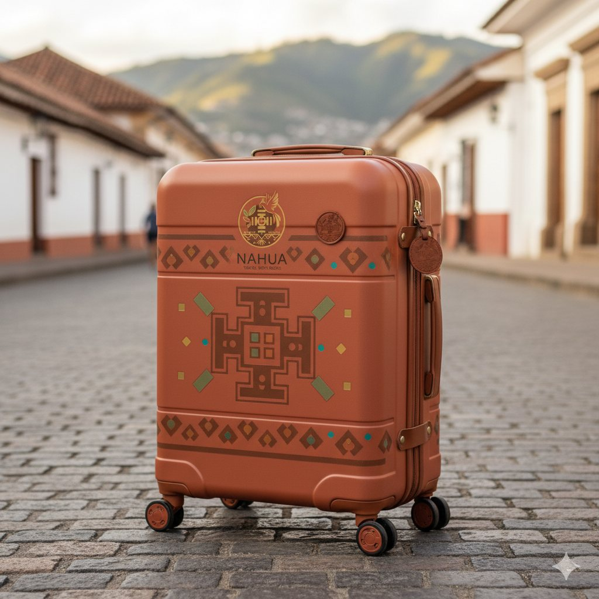
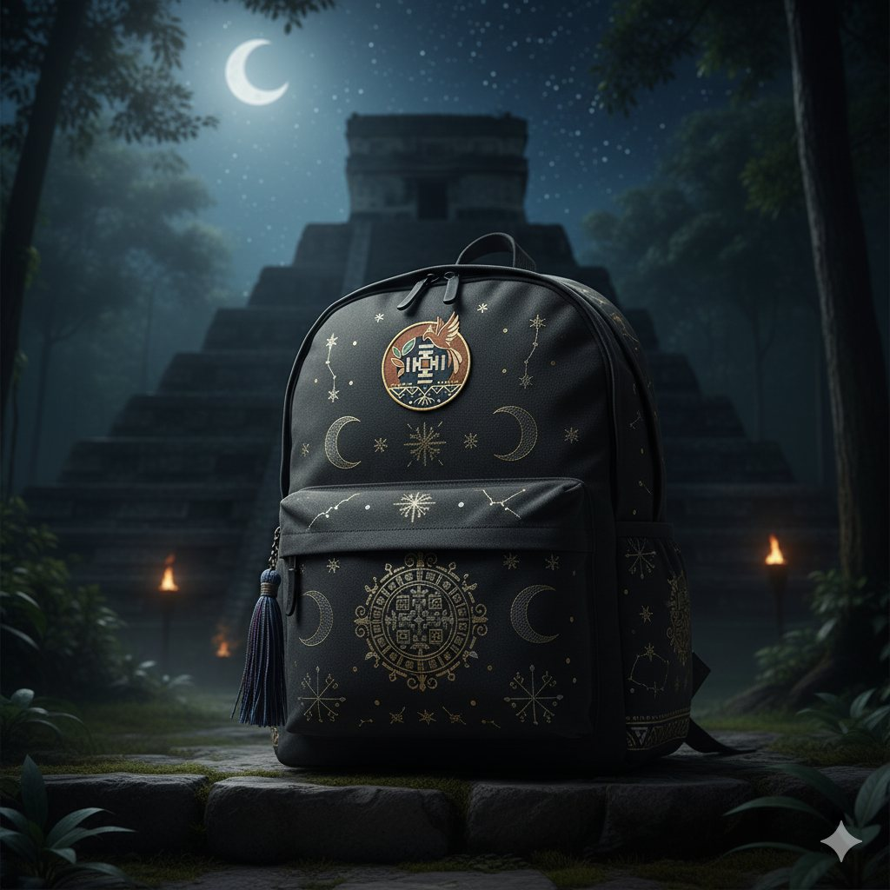
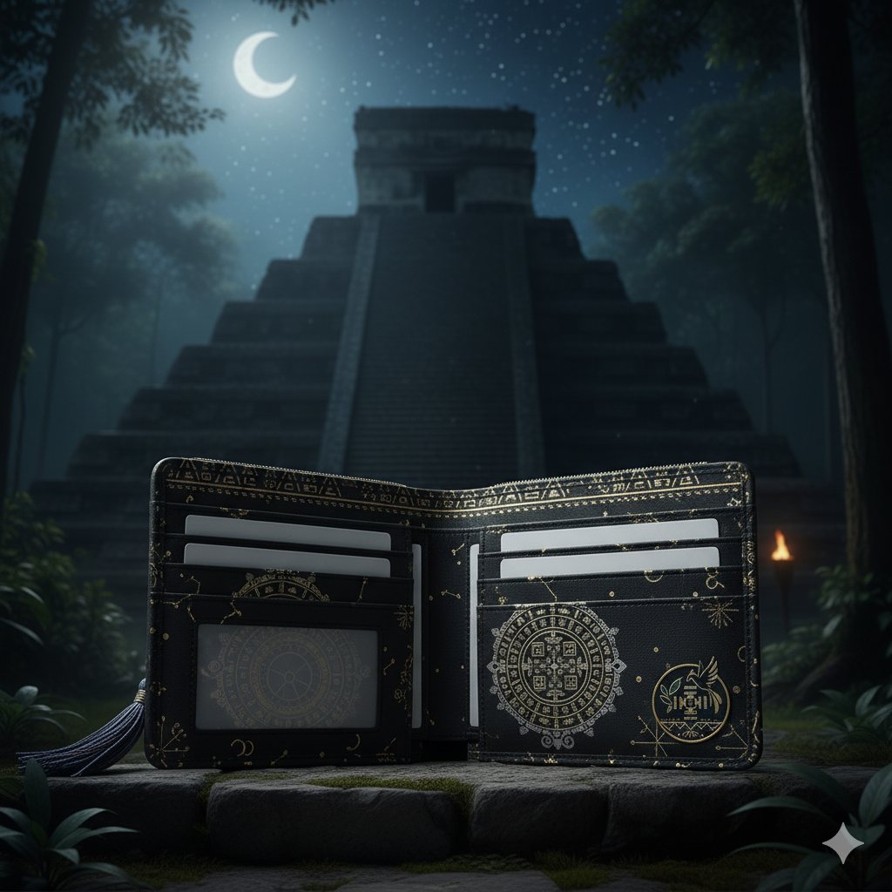
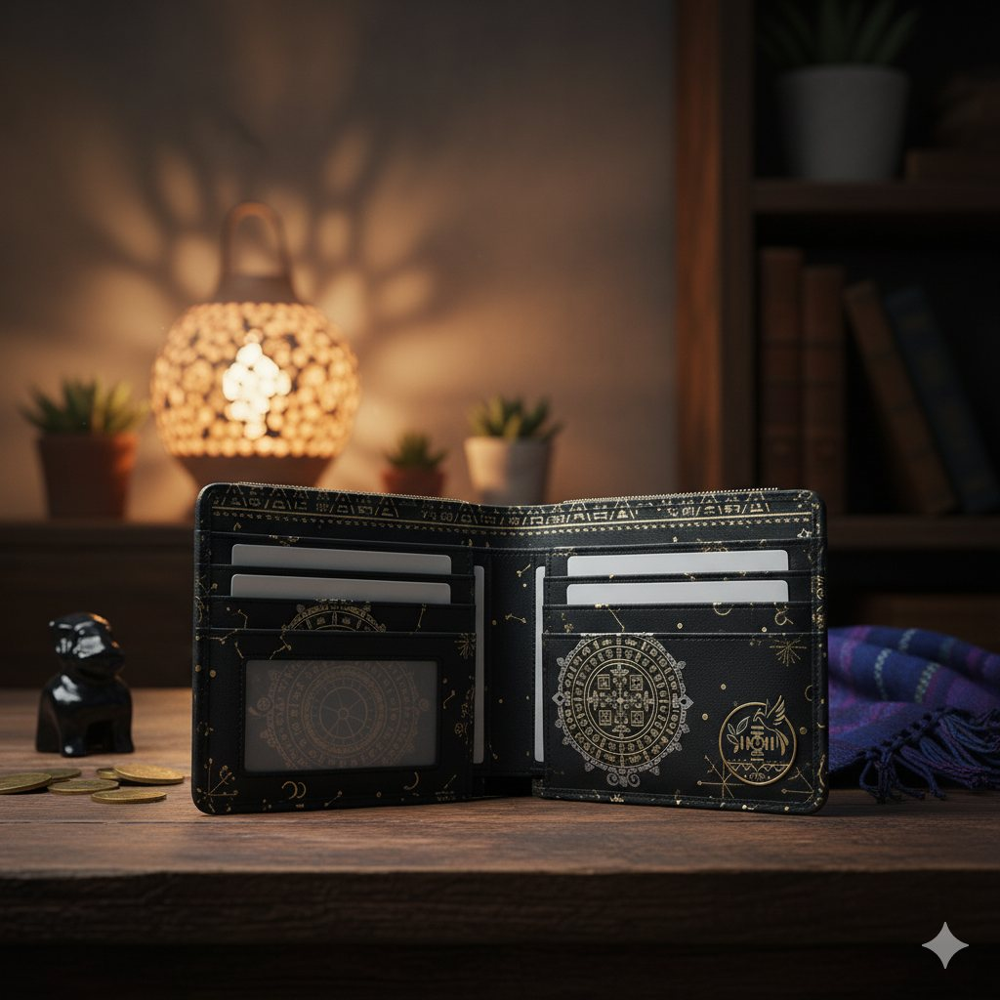
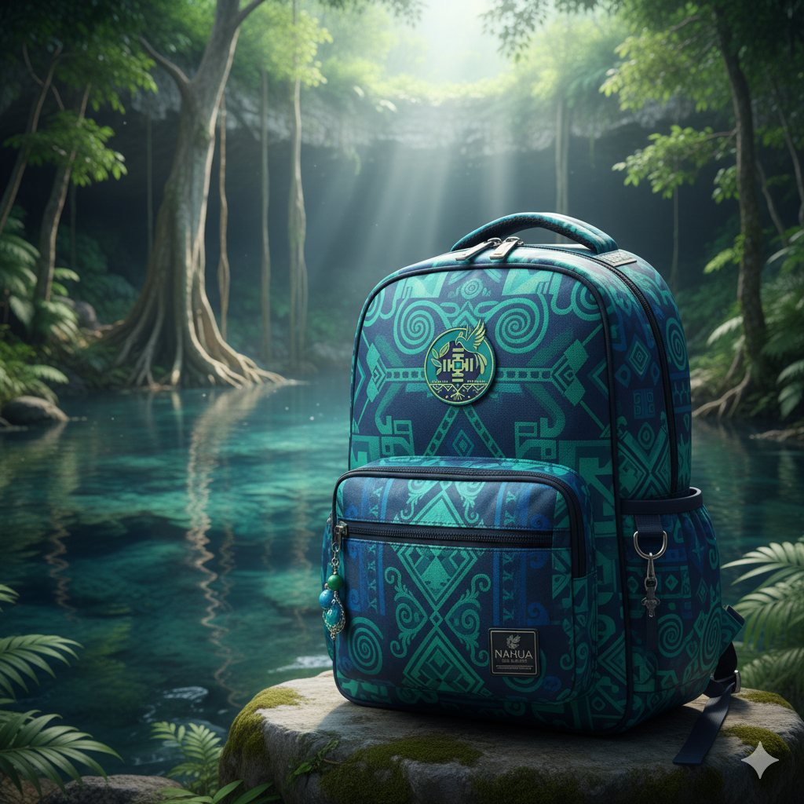
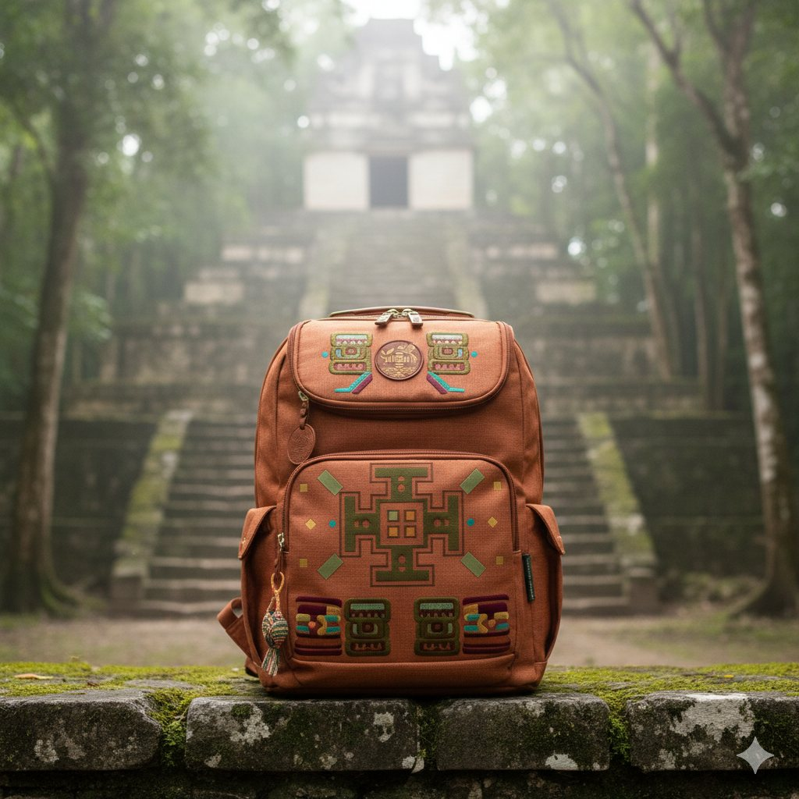
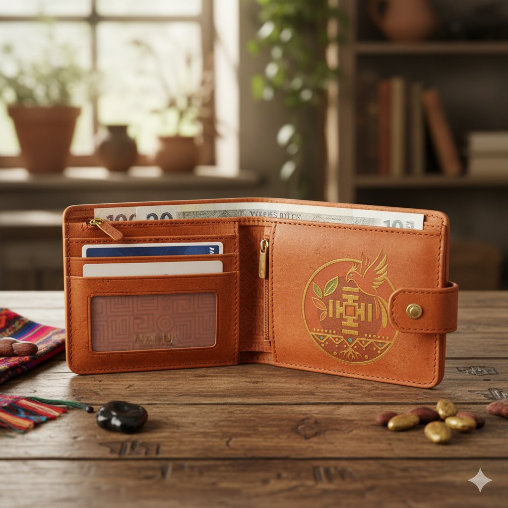

Colección
Espíritu Andino
Maletas y accesorios en tonos terrosos y cálidos inspirados en la cordillera y la chakana.
Ver másCada colección nace de un territorio sagrado. Filtra por colección y toca un producto para conocerlo.







Maletas y accesorios en tonos terrosos y cálidos inspirados en la cordillera y la chakana.
Ver másMochilas y billeteras en tonos oscuros con detalles dorados y celestiales inspirados en la noche y la cosmovisión maya/quiché.
Ver másProductos en tonos azules profundos y verdes acuáticos inspirados en el culto al agua, los cenotes y los ríos sagrados.
Ver másUna maleta de cabina en tono arcilla con la chakana al centro, pensada para recorrer calles empedradas y ciudades de montaña.
Desde $489.000 COP
Mochila oscura bordada en dorado con lunas, constelaciones y un mandala central, inspirada en la noche y la cosmovisión maya/quiché.
Desde $259.000 COP
Billetera en tonos oscuros con detalles dorados que acompaña a la mochila de la colección.
Desde $89.000 COP
Una segunda versión de la billetera nocturna, con el emblema Nahua y acabados dorados.
Desde $99.000 COP
Mochila en azules profundos y verdes acuáticos con motivos que evocan el agua, los cenotes y los ríos sagrados.
Desde $279.000 COP
Mochila en arcilla con bordados geométricos de colores, fotografiada frente a un templo escondido en la selva.
Desde $269.000 COP
Billetera en tono arcilla con el emblema dorado de Nahua: organización para tus documentos y un símbolo para recordar tus raíces.
Desde $99.000 COP